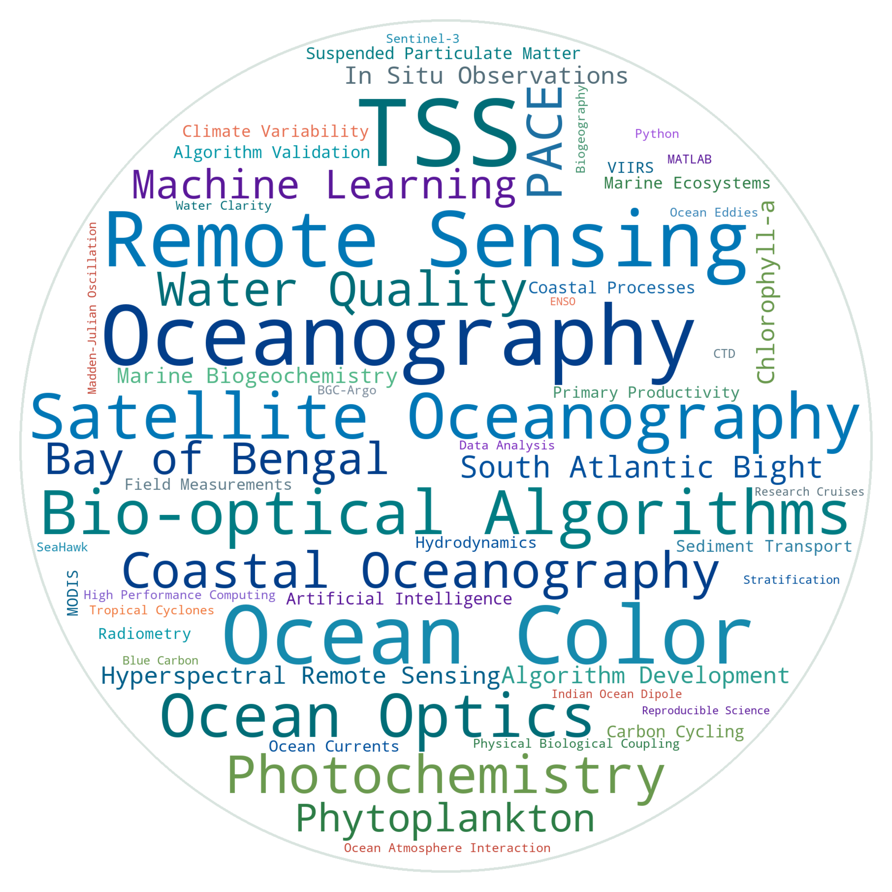

About Me
I am a Ph.D. Candidate in Marine Sciences at the University of Georgia (UGA) Skidaway Institute of Oceanography working under Dr. Sara Rivero-Calle. My research focuses on bio-optical oceanography, satellite ocean color remote sensing, physical-biological interactions, and coastal water quality.
I integrate multi-mission satellite imagery (NASA PACE, MODIS, VIIRS, Sentinel-3, and SeaHawk CubeSat) with high-performance computing (HPC), machine learning, and in situ radiometric and biogeochemical observations.
Research Focus & Word Cloud

Education
- Ph.D. Candidate in Marine Sciences (CGPA: 3.82) – University of Georgia, USA (2021–Present)
- P.G. Diploma in Ocean Observation – Alfred Wegener Institute (AWI), Germany (2016–2017)
- M.S. in Oceanography – University of Dhaka, Bangladesh (2014–2015)
- B.Sc. in Fisheries & Marine Resources Tech. – Khulna University, Bangladesh (2008–2012)